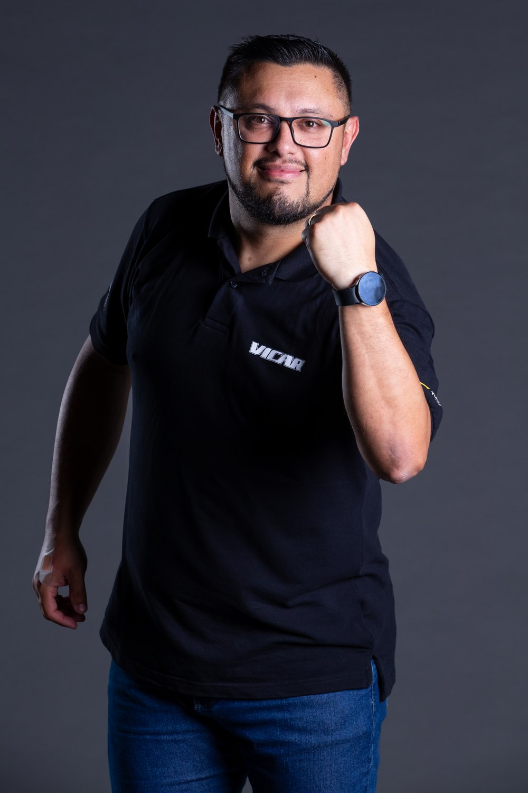

Transmitimos emoções
Ao vivo, de um jeito diferente,
como as corridas merecem.
No Alto Giro: transmissões ao vivo, narração oficial e produção de conteúdo para o automobilismo. Presentes na Stock Light, Turismo Nacional BR e vários campeonatos regionais, incluindo kart. No ar desde 2006.

Quem narra a corrida também já correu
O No Alto Giro nasceu em 2006 e se tornou referência em transmissões de automobilismo no Brasil. Com irreverência, simpatia e conhecimento técnico, levamos até você a emoção das principais categorias do país — hoje como repórter oficial da Stock Light, Turismo Nacional, TCC Race Festival, além de vários campeonatos de turismo e kart como Copa SVB de Osternack de Kart, Metropolitano de Kart e CEKP - Copa Endurance do Kart Park.
Por trás do microfone, tem quem já correu: Deivicris de Cristo une a experiência de piloto à voz de narrador, repórter e comentarista pra contar cada prova com quem entende do assunto — de dentro do carro pra dentro da transmissão.
"Melhor que ontem e pior que amanhã."Deivicris de Cristo
O que fazemos
Estrutura completa pra levar seu evento, categoria ou marca do paddock direto pra tela.
Transmissão ao vivo
Cobertura completa de corridas e eventos, com estrutura profissional do início ao fim da prova.
Narração oficial
Narração dinâmica e técnica para categorias como Stock Light, Turismo Nacional, TCC Race Festival, além de vários campeonatos de kart e turismo.
Produção de conteúdo
Vídeos, fotos e reportagens sob medida para equipes, categorias e patrocinadores.
Produção de mídias sociais
Cobertura de todo o fim de semana de pilotos e equipes em realtime com stories, reels, entrevistas e publicações.
PodFast
Toda semana, Deivicris e mais um ou mais convidados trazem assuntos fresquinhos ou mesmo lembranças do nosso automobilismo com quadros como "Layouts Que Marcaram Época" e "Do Tempo do VHS", tudo contado do jeito que só quem já correu sabe contar.
Quase 11 mil no grid
Bastidores, cobertura completa de corridas e conteúdo semanal sobre o automobilismo nacional.
Do que a gente anda escrevendo
Textos, biografias de piloto e bastidores direto do paddock — publicados no nosso blog.
Categorias e eventos que cobrimos
De campeonatos nacionais a provas regionais — cada categoria com a cobertura que ela pede.
Stock Light
Cobertura jornalística oficial da categoria, etapa a etapa.
Turismo Nacional BR
Reportagens e conteúdos oficiais ao longo do campeonato.
Copa SVB Osternack de Kart
Narração e transmissões ao vivo com geração de imagens feita por nós.
Automobilismo regional
Campeonatos estaduais e provas regionais pelo Brasil, como o campeonato catarinense da TCC Race Festival.
Kart e Turismo
Contrate apenas o serviço de narração para a sua transmissão em provas de turismo e kart, feitas por Deivicris de Cristo.
Transmissões Ao Vivo
Expandindo a cobertura do No Alto Giro para o universo do kartismo rental com um ótimo custo/benefício.
Bora fechar a próxima transmissão?
Fale com a gente pelo WhatsApp e leve o No Alto Giro pro seu evento, categoria ou equipe.
Falar no WhatsApp